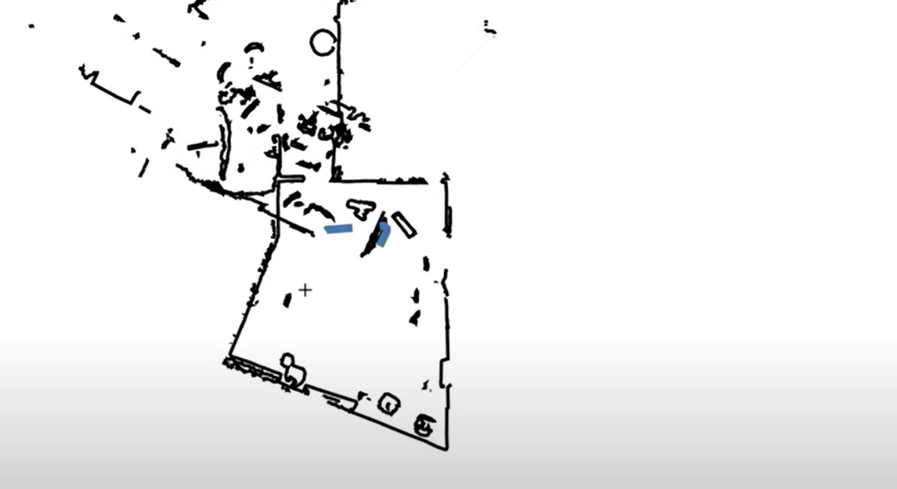
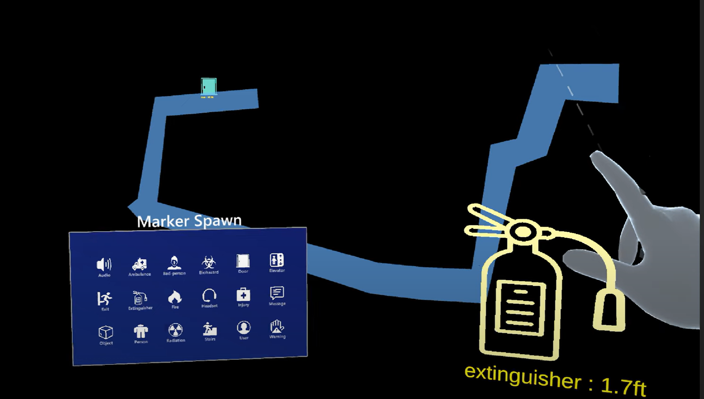

NIST - Augmented Reality for Visual Collaboration in Indoor Scenarios
 (REU Program, Athena - Duke University)
GitHub RepoThis project addressed the challenges of indoor navigation and collaboration in high-stakes emergency scenarios, such as supporting first responders in hazardous environments. My primary role was to design and implement an interactive 3D volumetric map in Unity, enabling commanders to visualize operations in real time and direct teams effectively.
Using Unity, I developed a 3D volumetric map that integrated real-time data from team members equipped with HoloLens 2 headsets. These team members scanned and meshed their surroundings, transmitting structural data and marking critical features like biohazard zones or victim locations to a central server. I integrated this incoming data into the map, adding interactive elements such as feature markers and navigation paths generated through Unity’s NavMesh.
The map allowed the commander to oversee operations by projecting it onto a flat surface, such as a table, where it could be manipulated through zooming, rotating, and clipping selected portions. I ensured that real-time updates, including responder positions and marker changes, were streamed seamlessly via WebSocket connections, providing a dynamic and immersive experience.
One of the most impactful features I implemented was interactive navigation. By dragging an avatar to a marker on the map—such as a victim's location—the system sends the location to Unity's NavMesh and generates a precise navigation path for responders. This path was displayed both to the commander and the designated responder, enabling efficient and coordinated actions.
Working on this project brought me back to my roots in XR, the field that first inspired my interest in immersive design. It was deeply fulfilling to see how technologies like AR could be harnessed to address critical challenges, blending creativity with technical precision. This experience also sparked my curiosity about serious games—immersive, purpose-driven applications beyond entertainment—and strengthened my desire to explore how AR/VR can transform areas like disaster response, education, and professional training.